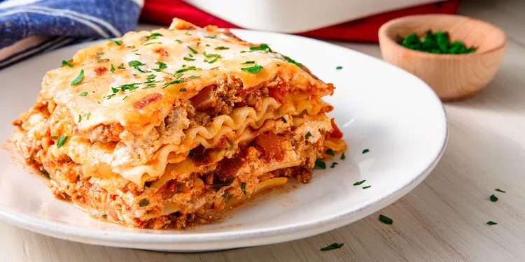
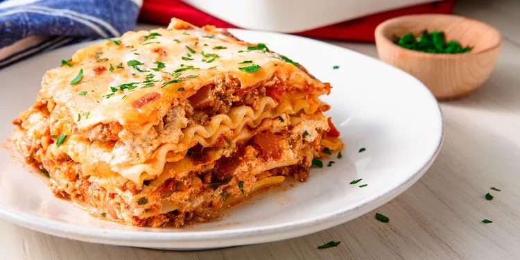

Lasagna Ingredients
The Allrecipes community adores this lasagna recipe because it's incredibly customizable, so you can easily
alter the ingredient list to suit your needs. If you want to stay true to the original recipe, though, these
are the ingredients you'll need to add to your grocery list:
- Meat: This super meaty lasagna has sweet Italian sausage and lean ground beef.
- Onion and garlic: An onion and two cloves of garlic are cooked with the meat to add
tons of flavor.
- Tomato products: You'll need a can of crushed tomatoes, two cans of tomato sauce,
and two cans of tomato paste.
- Sugar: Two tablespoons of white sugar add subtle sweetness and enhance the flavor
of the sauce.
- Spices and seasonings: This lasagna recipe is flavored with fresh parsley, dried
basil leaves, salt, Italian seasoning, fennel seeds, and black pepper.
- Lasagna noodles: Use store-bought or homemade lasagna noodles.
- Cheeses: Parmesan, mozzarella, and ricotta cheese make this lasagna extra decadent.
- Egg: An egg helps bind the ricotta so it doesn't ooze out of the lasagna when you
cut into it.
 
